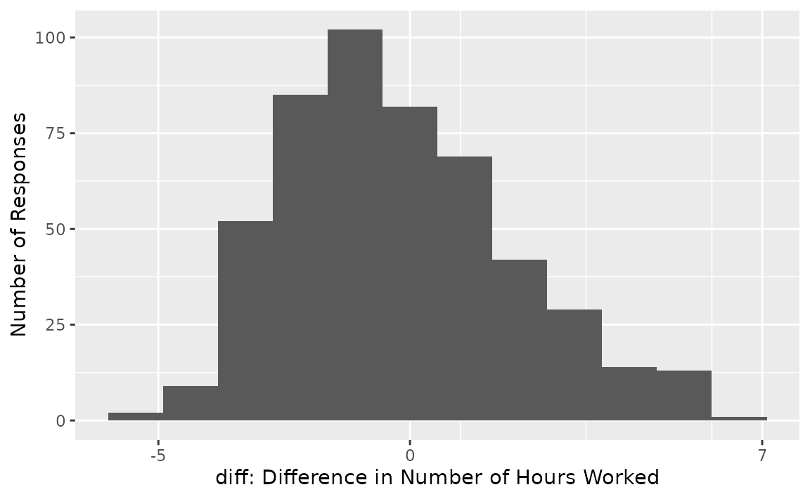
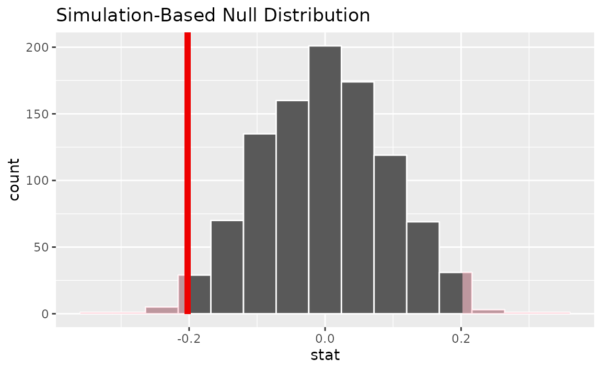
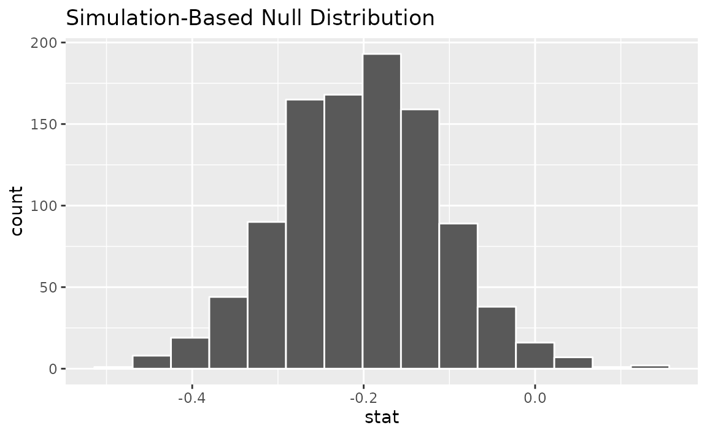

Introduction
In this vignette, we’ll walk through conducting a randomization-based paired test of independence with infer.
Throughout this vignette, we’ll make use of the gss
dataset supplied by infer, which contains a sample of data from the
General Social Survey. See ?gss for more information on the
variables included and their source. Note that this data (and our
examples on it) are for demonstration purposes only, and will not
necessarily provide accurate estimates unless weighted properly. For
these examples, let’s suppose that this dataset is a representative
sample of a population we want to learn about: American adults. The data
looks like this:
dplyr::glimpse(gss)## Rows: 500
## Columns: 11
## $ year <dbl> 2014, 1994, 1998, 1996, 1994, 1996, 1990, 2016, 2000,…
## $ age <dbl> 36, 34, 24, 42, 31, 32, 48, 36, 30, 33, 21, 30, 38, 4…
## $ sex <fct> male, female, male, male, male, female, female, femal…
## $ college <fct> degree, no degree, degree, no degree, degree, no degr…
## $ partyid <fct> ind, rep, ind, ind, rep, rep, dem, ind, rep, dem, dem…
## $ hompop <dbl> 3, 4, 1, 4, 2, 4, 2, 1, 5, 2, 4, 3, 4, 4, 2, 2, 3, 2,…
## $ hours <dbl> 50, 31, 40, 40, 40, 53, 32, 20, 40, 40, 23, 52, 38, 7…
## $ income <ord> $25000 or more, $20000 - 24999, $25000 or more, $2500…
## $ class <fct> middle class, working class, working class, working c…
## $ finrela <fct> below average, below average, below average, above av…
## $ weight <dbl> 0.8960, 1.0825, 0.5501, 1.0864, 1.0825, 1.0864, 1.062…Two sets of observations are paired if each observation in one column
has a special correspondence or connection with exactly one observation
in the other. For the purposes of this vignette, we’ll simulate an
additional data variable with a natural pairing: suppose that each of
these survey respondents had provided the number of hours
worked per week when surveyed 5 years prior, encoded as
hours_previous.
set.seed(1)
gss_paired <- gss |>
mutate(
hours_previous = hours + 5 - rpois(nrow(gss), 4.8),
diff = hours - hours_previous
)
gss_paired |>
select(hours, hours_previous, diff)## # A tibble: 500 × 3
## hours hours_previous diff
## <dbl> <dbl> <dbl>
## 1 50 52 -2
## 2 31 32 -1
## 3 40 40 0
## 4 40 37 3
## 5 40 42 -2
## 6 53 50 3
## 7 32 28 4
## 8 20 19 1
## 9 40 40 0
## 10 40 43 -3
## # ℹ 490 more rowsThe number of hours worked per week by a particular
respondent has a special correspondence with the number of hours worked
5 years prior hours_previous by that same respondent. We’d
like to test the null hypothesis that the "mean" hours
worked per week did not change between the sampled time and five years
prior.
To carry out inference on paired data with infer, we pre-compute the difference between paired values at the beginning of the analysis, and use those differences as our values of interest.
Here, we pre-compute the difference between paired observations as
diff. The distribution of diff in the observed
data looks like this:

From the looks of the distribution, most respondents worked a similar number of hours worked per week as they had 5 hours prior, though it seems like there may be a slight decline of number of hours worked per week in aggregate. (We know that the true effect is -.2 since we’ve simulated this data.)
We calculate the observed statistic in the paired setting in the same
way that we would outside of the paired setting. Using
specify() and calculate():
# calculate the observed statistic
observed_statistic <-
gss_paired |>
specify(response = diff) |>
calculate(stat = "mean")The observed statistic is -0.202. Now, we want to compare this statistic to a null distribution, generated under the assumption that the true difference was actually zero, to get a sense of how likely it would be for us to see this observed difference if there were truly no change in hours worked per week in the population.
Tests for paired data are carried out via the
null = "paired independence" argument to
hypothesize().
# generate the null distribution
null_dist <-
gss_paired |>
specify(response = diff) |>
hypothesize(null = "paired independence") |>
generate(reps = 1000, type = "permute") |>
calculate(stat = "mean")
null_dist## Response: diff (numeric)
## Null Hypothesis: paired independence
## # A tibble: 1,000 × 2
## replicate stat
## <int> <dbl>
## 1 1 -0.146
## 2 2 0.19
## 3 3 0.042
## 4 4 0.034
## 5 5 -0.138
## 6 6 -0.03
## 7 7 0.174
## 8 8 0.066
## 9 9 0.01
## 10 10 0.13
## # ℹ 990 more rowsFor each replicate, generate() carries out
type = "permute" with
null = "paired independence" by:
- Randomly sampling a vector of signs (i.e. -1 or 1), probability .5 for either, with length equal to the input data, and
- Multiplying the response variable by the vector of signs, “flipping” the observed values for a random subset of value in each replicate
To get a sense for what this distribution looks like, and where our
observed statistic falls, we can use visualize():
# visualize the null distribution and test statistic
null_dist |>
visualize() +
shade_p_value(observed_statistic,
direction = "two-sided")
It looks like our observed mean of -0.202 would be relatively unlikely if there were truly no change in mean number of hours worked per week over this time period.
More exactly, we can calculate the p-value:
# calculate the p value from the test statistic and null distribution
p_value <- null_dist |>
get_p_value(obs_stat = observed_statistic,
direction = "two-sided")
p_value## # A tibble: 1 × 1
## p_value
## <dbl>
## 1 0.028Thus, if the change in mean number of hours worked per week over this time period were truly zero, our approximation of the probability that we would see a test statistic as or more extreme than -0.202 is approximately 0.028.
We can also generate a bootstrap confidence interval for the mean
paired difference using type = "bootstrap" in
generate(). As before, we use the pre-computed differences
when generating bootstrap resamples:
# generate a bootstrap distribution
boot_dist <-
gss_paired |>
specify(response = diff) |>
hypothesize(null = "paired independence") |>
generate(reps = 1000, type = "bootstrap") |>
calculate(stat = "mean")
visualize(boot_dist)
Note that, unlike the null distribution of test statistics generated
earlier with type = "permute", this distribution is
centered at observed_statistic.
Calculating a confidence interval:
# calculate the confidence from the bootstrap distribution
confidence_interval <- boot_dist |>
get_confidence_interval(level = .95)
confidence_interval## # A tibble: 1 × 2
## lower_ci upper_ci
## <dbl> <dbl>
## 1 -0.390 -0.022By default, get_confidence_interval() constructs the
lower and upper bounds by taking the observations at the
and
th
percentiles. To instead build the confidence interval using the standard
error of the bootstrap distribution, we can write:
boot_dist |>
get_confidence_interval(type = "se",
point_estimate = observed_statistic,
level = .95)## # A tibble: 1 × 2
## lower_ci upper_ci
## <dbl> <dbl>
## 1 -0.383 -0.0210To learn more about randomization-based inference for paired observations, see the relevant chapter in Introduction to Modern Statistics.